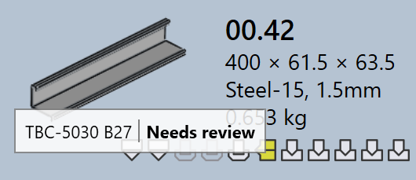
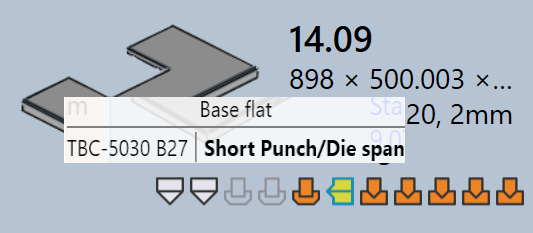

工装状态
在 TruSmartCAM 中，每个零件磁贴都直观地显示该零件在所有可用机床上的工装状态。这有助于用户快速查看零件在哪些机床上进行了工装，以及工装是否准备就绪、需要审查或缺失。
-
工装状态直接显示在零件磁贴上，使用图标和颜色指示器。
-
每个图标代表一种机床技术（例如，冲床、激光）。
-
图标的颜色表示该机床的当前工装状态。
下表解释了每个图标和颜色的含义，帮助用户准确解读工装状态。

| 机床图标 | 说明 |
|---|---|
|
激光切割机 |
|
冲床 |
|
折弯机 |
|
折边机 |
| 工装状态 | 说明 |
|---|---|
|
工装正常 |
|
工装有警告 |
|
工装有错误 |
|
工装不可用 |
工装错误
CAM（计算机辅助制造）错误发生在工装或制造准备阶段。这些错误是由于工具碰撞、工装缺失或无效的切割条件等问题引起的。
折弯工装错误
-
检测到碰撞 和 夹钳错误：折弯设置在仿真期间导致工具或夹具碰撞。


-
过载错误 和 法兰窄或孔太近：折弯工具超载，或孔位置距离折弯线太近，可能会损坏零件或工具。


-
需要审查 和 上模/下模寿命短：工装设置需要人工检查，或选择的模具/冲头跨度小于零件所需的跨度。
 
-
装备未分配、后挡料差 或 Part too big for this machine：所需的折弯工具不可用、后挡料未正确配置或零件对于所选机床来说太大。


切割工装错误
-
缺少切割条件：原材料未映射切割条件，因此无法执行切割。

-
未经模具加工或部分模具加工的轮廓 : Some shapes or edges are missed or only partly covered during the tooling process, making the part incomplete for cutting.